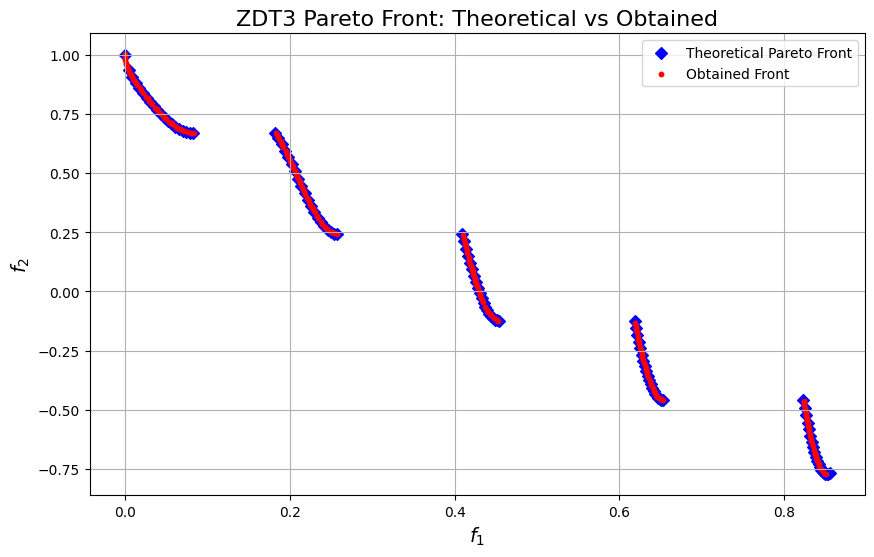
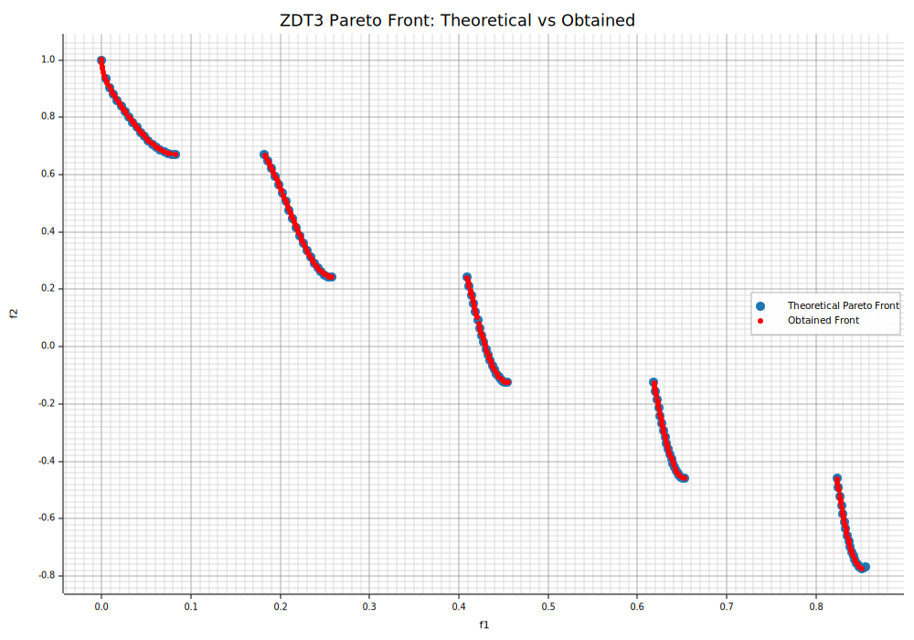

moo-rs
Evolution is a mystery


Overview
moo-rs is a project for solving multi-objective optimization problems with evolutionary algorithms, combining:
- moors: a pure-Rust crate for high-performance implementations of genetic algorithms
- pymoors: a Python extension crate (via pyo3) exposing
moorsalgorithms with a Pythonic API
Inspired by the amazing Python project pymoo, moo-rs delivers both the speed of Rust and the ease-of-use of Python.
Key Features
- Implemented in Rust for superior performance.
- Accessible in Python through pyo3.
- Specialized in solving multi-objective optimization problems using genetic algorithms.
Available Multi-Objective Algorithms
A concise index of the currently available algorithms.
| Algorithm | Description |
|---|---|
| NSGA-II | Baseline Pareto-based MOEA with fast non-dominated sorting and crowding distance. Robust, widely used for 2–3 objectives. |
| NSGA-III | Many-objective extension of NSGA-II using reference points to maintain diversity and guide convergence. |
| IBEA | Indicator-Based EA that optimizes a quality indicator (e.g., hypervolume/ε-indicator) to drive selection. |
| SPEA-II | Strength Pareto EA with enhanced fitness assignment, density estimation (k-NN), and external archive. |
| AGEMOEA | Approximation-guided MOEA that directly improves the Pareto-front approximation via set-level indicators. |
| RNSGA-II | Reference-point oriented NSGA-II variant; biases the search toward regions of interest while preserving diversity. |
| REVEA | Reference vector/region–guided evolutionary algorithm using directional vectors to balance diversity and convergence. |
| Custom Defined Algorithms | User defined algorithms by defining selection and survival operators |
Introduction to Multi-Objective Optimization
Multi-objective optimization refers to a set of techniques and methods designed to solve problems where multiple objectives must be satisfied simultaneously. These objectives are often conflicting, meaning that improving one may deteriorate another. For instance, one might seek to minimize production costs while maximizing product quality at the same time.
General Formulation
A multi-objective optimization problem can be formulated in a generic mathematical form. If we have \(k\) objective functions to optimize, it can be expressed as:
Where: - \( x \) represents the set of decision variables. - \( f_i(x) \) are the objective functions. - \( g_i(x) \leq 0 \) and \( h_j(x) = 0 \) represent the constraints_fn of the problem (e.g., resource limits, quality requirements, etc.).
Unlike single-objective optimization, here we seek to optimize all objectives simultaneously. However, in practice, there is no single “best” solution for all objectives. Instead, we look for a set of solutions known as the Pareto front or Pareto set.
Quickstart
The well known ZTD3 problem solved with the NSGA-II algorithm!
import numpy as np
import matplotlib.pyplot as plt
from pymoors import (
Nsga2,
RandomSamplingFloat,
GaussianMutation,
ExponentialCrossover,
CloseDuplicatesCleaner,
Constraints
)
from pymoors.schemas import Population
from pymoors.typing import TwoDArray
np.seterr(invalid="ignore")
def evaluate_zdt3(population: TwoDArray) -> TwoDArray:
"""
Evaluate the ZDT3 objectives in a fully vectorized manner.
"""
# First objective: f1 is simply the first column.
f1 = population[:, 0]
n = population.shape[1]
# Compute g for each candidate: g = 1 + (9/(n-1)) * sum(x[1:])
g = 1 + (9 / (n - 1)) * np.sum(population[:, 1:], axis=1)
# Compute h for each candidate: h = 1 - sqrt(f1/g) - (f1/g)*sin(10*pi*f1)
h = 1 - np.sqrt(f1 / g) - (f1 / g) * np.sin(10 * np.pi * f1)
# Compute the second objective: f2 = g * h
f2 = g * h
return np.column_stack((f1, f2))
def zdt3_theoretical_front():
"""
Compute the theoretical Pareto front for ZDT3.
Returns:
f1_theo (np.ndarray): f1 values on the theoretical front.
f2_theo (np.ndarray): Corresponding f2 values.
Instead of using a dense linspace, we sample only a few points per interval to
clearly illustrate the discontinuous nature of the front.
"""
# Define the intervals for f1 where the Pareto front exists
intervals = [
(0.0, 0.0830015349),
(0.1822287280, 0.2577623634),
(0.4093136748, 0.4538828821),
(0.6183967944, 0.6525117038),
(0.8233317983, 0.85518),
]
f1_theo = np.array([])
f2_theo = np.array([])
# Use a small number of points per interval (e.g., 20) to highlight the discontinuities.
for start, end in intervals:
f1_vals = np.linspace(start, end, 20)
f2_vals = 1 - np.sqrt(f1_vals) - f1_vals * np.sin(10 * np.pi * f1_vals)
f1_theo = np.concatenate((f1_theo, f1_vals))
f2_theo = np.concatenate((f2_theo, f2_vals))
return f1_theo, f2_theo
# Set up the NSGA2 algorithm with the above definitions
algorithm = Nsga2(
sampler=RandomSamplingFloat(min=0, max=1),
crossover=ExponentialCrossover(exponential_crossover_rate=0.75),
mutation=GaussianMutation(gene_mutation_rate=0.1, sigma=0.01),
fitness_fn=evaluate_zdt3,
constraints_fn=Constraints(lower_bound=0.0, upper_bound=1.0),
duplicates_cleaner=CloseDuplicatesCleaner(epsilon=1e-5),
num_vars=30,
population_size=200,
num_offsprings=200,
num_iterations=300,
mutation_rate=0.1,
crossover_rate=0.9,
keep_infeasible=False,
verbose=False,
)
# Run the algorithm
algorithm.run()
# Get the best Pareto front obtained (as a Population instance)
best: Population = algorithm.population.best_as_population
# Extract the obtained fitness values (each row is [f1, f2])
obtained_fitness = best.fitness
f1_found = obtained_fitness[:, 0]
f2_found = obtained_fitness[:, 1]
# Compute the theoretical Pareto front for ZDT3
f1_theo, f2_theo = zdt3_theoretical_front()
# Plot the theoretical Pareto front and the obtained front
plt.figure(figsize=(10, 6))
# Plot theoretical front as markers (e.g., diamonds) to show discontinuities.
plt.scatter(
f1_theo, f2_theo, marker="D", color="blue", label="Theoretical Pareto Front"
)
# Plot obtained front as red circles.
plt.scatter(f1_found, f2_found, c="r", marker="o", s=10, label="Obtained Front")
plt.xlabel("$f_1$", fontsize=14)
plt.ylabel("$f_2$", fontsize=14)
plt.title("ZDT3 Pareto Front: Theoretical vs Obtained", fontsize=16)
plt.legend()
plt.grid(True)

:dep ndarray = "*"
:dep moors = "*"
:dep plotters = "0.3.6"
use ndarray::{Array2, Axis, Ix2, s};
use moors::{
impl_constraints_fn,
algorithms::Nsga2Builder,
duplicates::CloseDuplicatesCleaner,
operators::{GaussianMutation, RandomSamplingFloat, ExponentialCrossover},
genetic::Population
};
use plotters::prelude::*;
/// Evaluate the ZDT3 objectives in a fully vectorized manner.
fn evaluate_zdt3(genes: &Array2<f64>) -> Array2<f64> {
// First objective: f1 is simply the first column.
// NOTE: We clamp to [0,1] during evaluation to keep the domain consistent with ZDT3.
// This mirrors the Python setup where variables are constrained to [0,1].
let n = genes.nrows();
let m = genes.ncols();
let clamped = genes.mapv(|v| v.clamp(0.0, 1.0));
let f1 = clamped.column(0).to_owned();
// Compute g for each candidate: g = 1 + (9/(n-1)) * sum(x[1:])
let tail = clamped.slice(s![.., 1..]);
let sums = tail.sum_axis(Axis(1));
let g = sums.mapv(|s| 1.0 + (9.0 / ((m as f64) - 1.0)) * s);
// Compute h for each candidate: h = 1 - sqrt(f1/g) - (f1/g)*sin(10*pi*f1)
let ratio = &f1 / &g;
let sin_term = f1.mapv(|v| (10.0 * std::f64::consts::PI * v).sin());
let h = 1.0 - ratio.mapv(|r| r.sqrt()) - &(&ratio * &sin_term);
// Compute the second objective: f2 = g * h
let f2 = &g * &h;
let mut result = Array2::<f64>::zeros((n, 2));
result.column_mut(0).assign(&f1);
result.column_mut(1).assign(&f2);
result
}
// Create constraints using the macro impl_constraints_fn
impl_constraints_fn!(BoundConstraints, lower_bound = 0.0, upper_bound = 1.0);
/// Compute the theoretical Pareto front for ZDT3.
///
/// Returns:
/// f1_theo (np.ndarray): f1 values on the theoretical front.
/// f2_theo (np.ndarray): Corresponding f2 values.
///
/// Instead of using a dense linspace, we sample only a few points per interval to
/// clearly illustrate the discontinuous nature of the front.
fn zdt3_theoretical_front() -> (Vec<f64>, Vec<f64>) {
// Define the intervals for f1 where the Pareto front exists
let intervals: &[(f64, f64)] = &[
(0.0, 0.0830015349),
(0.1822287280, 0.2577623634),
(0.4093136748, 0.4538828821),
(0.6183967944, 0.6525117038),
(0.8233317983, 0.85518),
];
let mut f1_theo: Vec<f64> = Vec::new();
let mut f2_theo: Vec<f64> = Vec::new();
// Use a small number of points per interval (e.g., 20) to highlight the discontinuities.
for (start, end) in intervals.iter().copied() {
let steps = 20usize;
for i in 0..steps {
let t = i as f64 / (steps as f64 - 1.0);
let f1 = start + t * (end - start);
let f2 = 1.0 - f1.sqrt() - f1 * (10.0 * std::f64::consts::PI * f1).sin();
f1_theo.push(f1);
f2_theo.push(f2);
}
}
(f1_theo, f2_theo)
}
// Set up the NSGA2 algorithm with the above definitions
let population: Population<Ix2, Ix2> = {
let mut algorithm = Nsga2Builder::default()
.sampler(RandomSamplingFloat::new(0.0, 1.0))
.crossover(ExponentialCrossover::new(0.75))
.mutation(GaussianMutation::new(0.1, 0.01))
.duplicates_cleaner(CloseDuplicatesCleaner::new(1e-5))
.fitness_fn(evaluate_zdt3)
.constraints_fn(BoundConstraints)
.num_vars(30)
.population_size(200)
.num_offsprings(200)
.num_iterations(300)
.mutation_rate(0.1)
.crossover_rate(0.9)
.keep_infeasible(false)
.verbose(false)
.seed(42)
.build()
.expect("Failed to build NSGA2");
// Run the algorithm
algorithm.run().expect("NSGA2 run failed");
algorithm.population.unwrap().clone()
};
// Get the best Pareto front obtained (as a Population instance)
let fitness = population.fitness;
// Extract the obtained fitness values (each row is [f1, f2])
let f1_found: Vec<f64> = fitness.column(0).to_vec();
let f2_found: Vec<f64> = fitness.column(1).to_vec();
// Compute the theoretical Pareto front for ZDT3
let (f1_theo, f2_theo) = zdt3_theoretical_front();
// Plot the theoretical Pareto front and the obtained front
let mut svg = String::new();
{
let backend = SVGBackend::with_string(&mut svg, (1000, 700));
let root = backend.into_drawing_area();
root.fill(&WHITE).unwrap();
// Compute min/max from actual data
let (mut x_min, mut x_max) = (f1_theo[0], f1_theo[0]);
let (mut y_min, mut y_max) = (f2_theo[0], f2_theo[0]);
for &x in f1_theo.iter().chain(f1_found.iter()) {
if x < x_min { x_min = x; }
if x > x_max { x_max = x; }
}
for &y in f2_theo.iter().chain(f2_found.iter()) {
if y < y_min { y_min = y; }
if y > y_max { y_max = y; }
}
// Add a small margin (5%)
let xr = (x_max - x_min);
let yr = (y_max - y_min);
x_min -= xr * 0.05;
x_max += xr * 0.05;
y_min -= yr * 0.05;
y_max += yr * 0.05;
let mut chart = ChartBuilder::on(&root)
.caption("ZDT3 Pareto Front: Theoretical vs Obtained", ("DejaVu Sans", 22))
.margin(10)
.x_label_area_size(40)
.y_label_area_size(60)
.build_cartesian_2d(x_min..x_max, y_min..y_max)
.unwrap();
chart.configure_mesh()
.x_desc("f1")
.y_desc("f2")
.axis_desc_style(("DejaVu Sans", 14))
.light_line_style(&RGBColor(220, 220, 220))
.draw()
.unwrap();
// Plot theoretical front as markers (e.g., diamonds) to show discontinuities.
chart.draw_series(
f1_theo.iter().zip(f2_theo.iter()).map(|(&x, &y)| {
Circle::new((x, y), 5, RGBColor(31, 119, 180).filled())
})
).unwrap()
.label("Theoretical Pareto Front")
.legend(|(x, y)| Circle::new((x, y), 5, RGBColor(31, 119, 180).filled()));
// Plot obtained front as red circles.
chart.draw_series(
f1_found.iter().zip(f2_found.iter()).map(|(&x, &y)| {
Circle::new((x, y), 3, RGBColor(255, 0, 0).filled())
})
).unwrap()
.label("Obtained Front")
.legend(|(x, y)| Circle::new((x, y), 3, RGBColor(255, 0, 0).filled()));
chart.configure_series_labels()
.border_style(&RGBAColor(0, 0, 0, 0.3))
.background_style(&WHITE.mix(0.9))
.label_font(("DejaVu Sans", 13))
.draw()
.unwrap();
root.present().unwrap();
}
// Emit as rich output for evcxr
println!("EVCXR_BEGIN_CONTENT image/svg+xml\n{}\nEVCXR_END_CONTENT", svg);

Advantages for Multi-Objective Optimization
- Natural Handling of Multiple Objectives: By operating on a population of solutions, GAs can maintain an approximation to the Pareto front during execution.
- Flexibility: They can be easily adapted to different kinds of problems (discrete, continuous, constrained, etc.).
- Robustness: They tend to perform well in the presence of noise or uncertainty in the problem, offering acceptable performance under less-than-ideal conditions.
Beauty and Misbehavior Optimization Problem
In this unique optimization problem, there is only one individual who optimizes both beauty and misbehavior at the same time: my little dog Arya!

Arya not only captivates with her beauty, but she also misbehaves in the most adorable way possible. This problem serves as a reminder that sometimes the optimal solution is as heartwarming as it is delightfully mischievous.